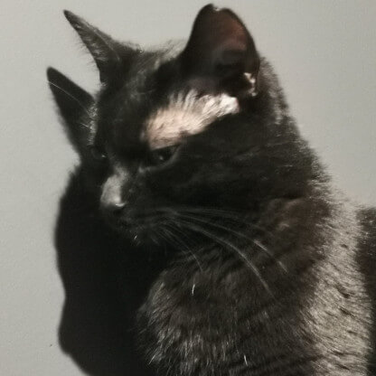
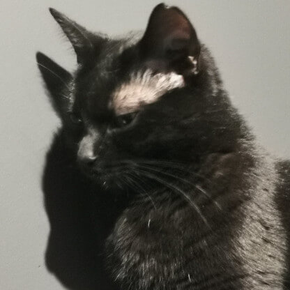

Witaj w mojej bajce

o mnie
"But I must explain to you how all this mistaken idea of denouncing pleasure and praising pain was born and I will give you a complete account of the system, and expound the actual teachings of the great explorer of th e truth, the master-builder of human happiness. No one rejects, dislikes, or avoids pleasure itself, because it is pleasure, but because those who do not know how to pursue pleasure rationally encounter consequences that are extremely painful. Nor again is there anyone who loves or pursues or desires to obtain pain of itself, because it is pain, but because occasionally circumstances occur in which toil and pain can procure him some great pleasure. To take a trivial example, which of us ever undertakes laborious physical exercise, except to obtain some advantage from it? But who has any right to find fault with a man who chooses to enjoy a pleasure that has no annoying consequences, or one who avoids a pain that produces no resultant pleasure?"
Bez kotów to nie życie


 



Moje kamienie milowe
Kurs CodeCamp
Odkrycie potrzeby frontendu
Sklep internetowy z Django
Pierwsza aplikacja w Django
Pierwsza aplikacja we Flasku
Rozpoczęcie studiów
Nauka Pythona
Może chcesz do mnie napisać?
A może kontakt przez social media?
FB
linkin
Inst